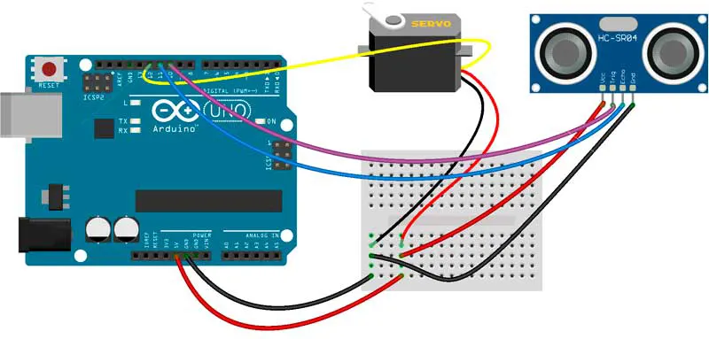

Introducción
Este innovador proyecto consiste en la implementación de un radar de detección utilizando un sensor ultrasónico, un servo motor y una placa Arduino. Gracias a este sistema, es posible escanear un área y detectar la presencia de objetos cercanos en tiempo real. Su aplicación se extiende desde sistemas de seguridad hasta robótica autónoma.
⚙️ Implementación
El radar está compuesto por un sensor ultrasónico HC-SR04 montado sobre un servo motor, que se mueve de 15° a 165° para cubrir un amplio campo de visión. La placa Arduino procesa los datos y los transmite para su visualización en tiempo real, permitiendo detectar objetos con gran precisión.
Resultados
El sistema es capaz de identificar objetos a diferentes distancias y representarlos en un gráfico en tiempo real. Gracias a su precisión, puede utilizarse en vehículos autónomos, sistemas de seguridad y monitoreo industrial. Además, es posible configurar alertas cuando un objeto se encuentra en una zona crítica.

Código Arduino
// Incluye la librería del Servo #includeconst int trigPin = 10; const int echoPin = 11; long duration; int distance; Servo myServo; void setup() { pinMode(trigPin, OUTPUT); pinMode(echoPin, INPUT); Serial.begin(9600); myServo.attach(12); } void loop() { for(int i = 15; i <= 165; i++) { myServo.write(i); delay(30); distance = calculateDistance(); Serial.print(i); Serial.print(","); Serial.print(distance); Serial.print("."); } for(int i = 165; i > 15; i--) { myServo.write(i); delay(30); distance = calculateDistance(); Serial.print(i); Serial.print(","); Serial.print(distance); Serial.print("."); } } int calculateDistance() { digitalWrite(trigPin, LOW); delayMicroseconds(2); digitalWrite(trigPin, HIGH); delayMicroseconds(10); digitalWrite(trigPin, LOW); duration = pulseIn(echoPin, HIGH); distance = duration * 0.034 / 2; return distance; }